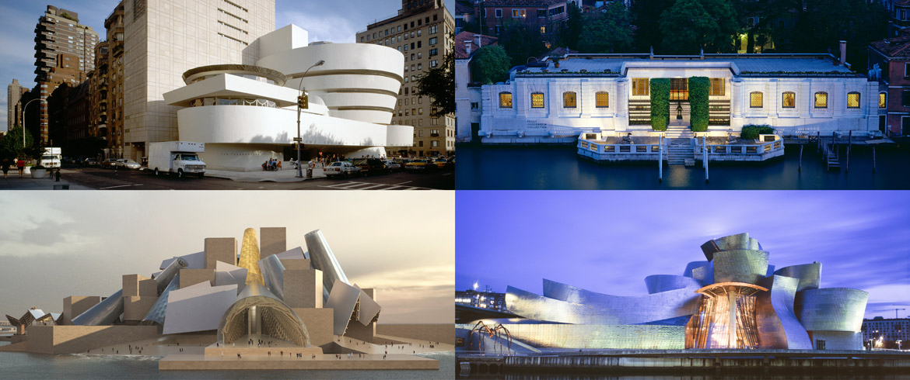

ABOUT US
New York
SOLOMON R. GUGGENHEIM MUSEUM
An internationally renowned art museum and one of the most significant architectural icons of the 20th century, the Guggenheim Museum in New York is at once a vital cultural center, an educational institution, and the heart of an international network of museums. Visitors can experience special exhibitions of modern and contemporary art, lectures by artists and critics, performances and film screenings, classes for teens and adults, and daily tours of the galleries led by museum educators. Founded on a collection of early modern masterpieces, the Guggenheim Museum today is an ever-evolving institution devoted to the art of the 20th century and beyond.
Architecture
In 1943, Frank Lloyd Wright was commissioned to design a building to house the Museum of Non-Objective Painting, which had been established by the Solomon R. Guggenheim Foundation in 1939. In a letter dated June 1, 1943, Hilla Rebay, the curator of the foundation and director of the museum, instructed Wright, “I want a temple of spirit, a monument!”
Wright’s original plans for the Solomon R. Guggenheim Museum called for a ten-story tower behind the smaller rotunda, to house galleries, offices, workrooms, storage, and private studio apartments. Largely for financial reasons, Wright’s proposed tower went unrealized. In 1990, Gwathmey Siegel & Associates Architects revived the plan with its eight-story tower, which incorporates the foundation and framing of a smaller 1968 annex designed by Frank Lloyd Wright’s son-in-law, William Wesley Peters.
In 1992, after a major interior renovation, the museum reopened with the entire original Wright building now devoted to exhibition space and completely open to the public for the first time. The tower contains 4,750 square meters of new and renovated gallery space, 130 square meters of new office space, a restored restaurant, and retrofitted support and storage spaces. The tower’s simple facade and grid pattern highlight Wright’s unique spiral design and serves as a backdrop to the rising urban landscape behind the museum.
VISIT

1071 5TH AVE, NEW YORK, NY BETWEEN 88TH & 89TH ST.
Pay What You Wish:
Every Saturday, from 5:45–7:45 pm, visitors can pay what they wish for admission. Suggested admission is $10 and the last ticket is issued at 7:15 pm. A line forms at 5:15 pm.